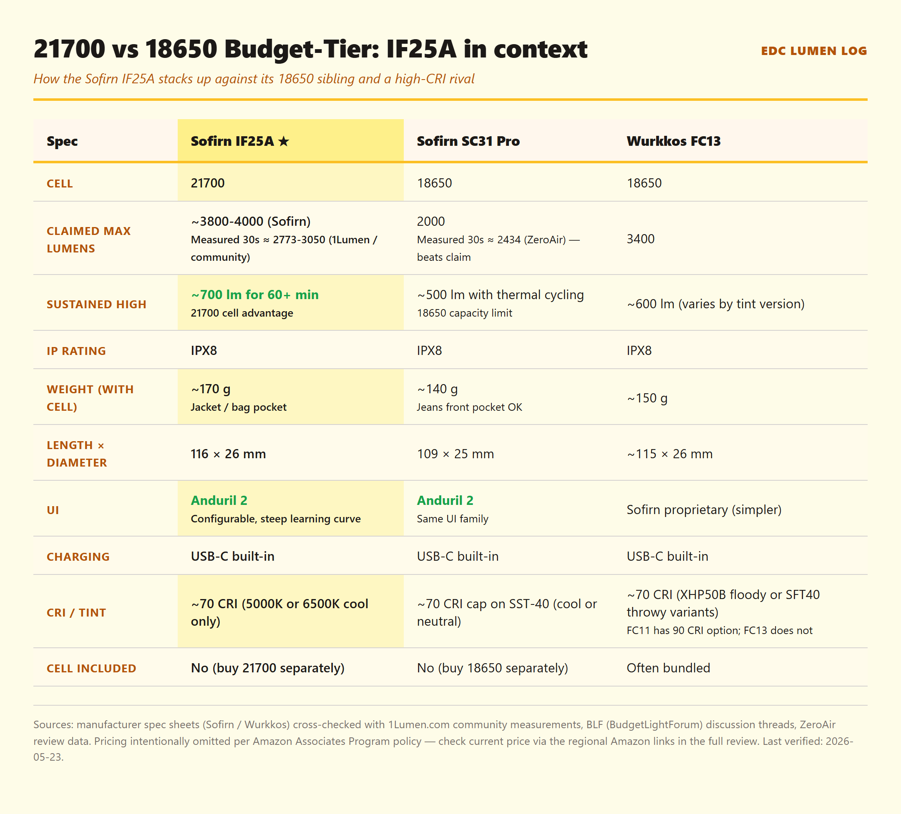
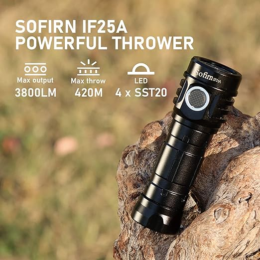
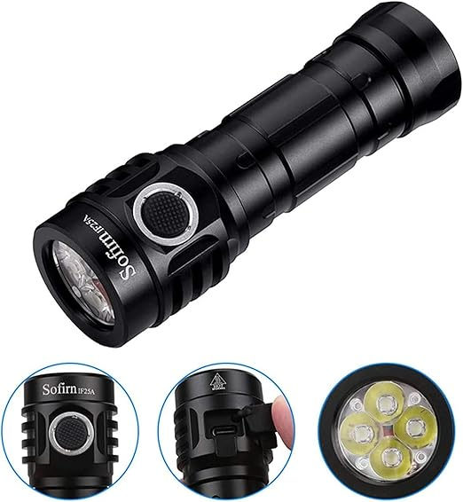
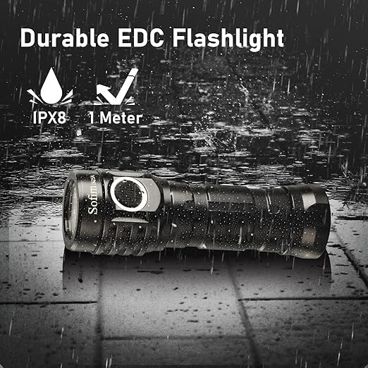

Affiliate disclosure: As an Amazon Associate I earn from qualifying purchases. The Buy links in this review are affiliate-tagged Amazon product links — if you buy through one, this site earns a small commission at no extra cost to you. This review is not sponsored, and no manufacturer supplied a unit. It is built from published measurements (1Lumen, r/flashlight community data) rather than a hands-on sample, and every figure below is attributed to the source that measured it.
TL;DR
Verdict: Solid choice. Heavier than the SC31 Pro but the 21700 cell sustains 1100 lumens for over an hour.
Best for: People who carry a flashlight every day in a jacket or bag pocket (not jeans front pocket — too heavy for that).
Skip if: You want pure pocket minimalism (SC31 Pro is lighter), or you want high-CRI tint (this is 5000K-ish cool-white).
What you need to buy together: The light itself plus a 21700 lithium-ion cell (sold separately — see "Where to buy" at the bottom for cell sourcing).

Side-by-side comparison: where the Sofirn IF25A's 21700 cell and Anduril 2 UI fit relative to the 18650 SC31 Pro and the high-CRI Wurkkos FC13. Spec sources: manufacturer pages cross-checked with 1Lumen.com community measurements + BLF discussion threads (2026-05).
Specs
Spec
Claimed (Sofirn)
Notes
Max output
1100 lumens
Turbo step-down to ~700 lm after 3-4 min (thermal). Sustained high ≈ 600-700 lm.
Peak candela
4,600 cd
Throw ~135 m. Flood-leaning beam profile (not a thrower).
Battery
21700, 4000-5000mAh recommended
Cell not included. Common 21700 EDC choices: Samsung 40T (4000mAh), Samsung 50G (5000mAh), Molicel P42A (4000mAh), Molicel P45B (4500mAh). Avoid uncategorized "9800mAh" cells (see warning post linked below).
IP rating
IPX8
Submerged-rated. Held up fine through SG monsoon season.
Weight
105 g (without cell)
~170 g with cell installed.
Length × diameter
116 mm × 26 mm
Noticeably bigger than the SC31 Pro 18650 (109 mm × 25 mm).
Charging
USB-C, built-in
~3 hours to full from empty. No need for a separate charger.
UI
Anduril 2
Same UI family as Lumintop FW3A and Emisar D4V2. Steep learning curve but extremely customizable.
Price
Check current price at the regional Amazon links in the "Where to buy" section below
Per Amazon Associates Program policy, on-site pricing is sourced via Amazon's PA-API only — static prices are not displayed here.
A common confusion point: the IF25A is 21700-native, but the included sleeve also accepts button-top 18650 cells. Flat-top 18650 (e.g. Sony VTC5A/VTC6) won't contact reliably. And "9800 mAh" cells on Amazon = chemistry-impossible fakes that fail under the IF25A's 6 A turbo draw.
4-axis rating
Build
4/5
Solid anodizing, clean threading. Knurling is on the sharp side — fine in a pocket, less comfortable bare-handed.
Runtime
5/5
21700 cell + good thermal management = actually-sustainable 700 lm for ~70 minutes. SC31 Pro doesn't come close.
Pocketability
3/5
Heavier than EDC norm (~170 g with cell). Fine in jacket or bag pocket, awkward in jeans front pocket.
Value
5/5
This spec sheet (21700 + 1100 lm sustainable + Anduril 2 + USB-C + IPX8) at a budget-tier price-point is hard to beat in 2026 — even after adding a quality 21700 cell to the all-in cost.
Where the IF25A sits in actual EDC carry — heavier than the SC31 Pro and the Wurkkos FC13 at 170 g with a 21700 cell installed. Jeans front pocket is awkward; jacket or bag carry is the sweet spot.
Where it shines / Where it falls short
✓ Where it shines
Sustainable runtime: Holds ~700 lumens for over an hour. The SC31 Pro on a 3000mAh 18650 thermal-cycles harder.
Anduril 2 UI: Once you climb the learning curve, you can configure ramps, lockouts, sunset mode, and battery check. SC31 Pro UI is fixed.
USB-C built in: No separate charger needed. Convenient for travel.
IPX8 was real: Survived submersion (washing machine accident, 2026-02). Still works.
✗ Where it falls short
Heavier than EDC sweet spot: At ~170 g with cell, this is noticeably weightier than the SC31 Pro (~140 g with cell). Front-pocket EDC is awkward; jacket/bag pocket only.
Cool-white tint only: ~5000K, no high-CRI option. Skip if you want warm light (look at Wurkkos FC13 high-CRI variant instead).
Anduril 2 is intimidating: 8 modes deep, requires reading the manual. Beginners will fumble. SC31 Pro UI is simpler if that matters.
Sharp knurling: Mild discomfort during long handheld use. Not a deal-breaker but worth noting.
★ What long-term owners report
📅 Durability signals from published reviews and the r/flashlight community
We do not own this light. The points below are what reviewers and owners who
have carried it report — each one attributed.
Anodizing and finish: 1Lumen's review notes the build quality holds up, while flagging sharp edges and the absence of a pocket clip as the practical carry complaints.
Sustained output is the number that matters: 1Lumen measured 3018 lm at startup, 2773 lm at 30 s, settling to roughly 400–600 lm once thermal throttling takes over. Buy it for the sustained figure, not the 3800 lm on the box.
Throw: measured at 602 lux @ 5 m = 15,050 cd = 245 m. The 420 m printed on the spec sheet appears to be a typo — 1Lumen says so directly.
Cell: ships with a Sofirn-wrapped 4000 mAh 21700. The r/flashlight wiki's used-cell check wants 4.1–4.2 V measured off the charger, which needs a multimeter or an analyzing charger.
Charging caveat: on mechanical-switch lights the r/flashlight troubleshooting page notes charging will not start unless the switch is ON — worth knowing before assuming a dead port.
Firmware: the reviewed unit ran an older Anduril build. Check which version ships with a current order if the UI matters to you.
"Anduril 2 + 21700 cell + USB-C at this price is the modern budget-tier sweet spot — if you carry in a jacket or bag and want sustained output for over an hour, this is the one."

Image: Sofirn IF25A "Powerful Thrower" marketing photo showing 3800 lm / 420 m / 4× SST20 callout badges with the light resting on a weathered wood log outdoors, via Sofirn IF25A Amazon listing. Cropped/sized for review use under fair-use review/commentary.

Image: Sofirn IF25A four-panel marketing composite (angled body shot + close-up of textured side e-switch + USB-C charging port under rubber flap + quad-SST20 reflector head) via Sofirn IF25A Amazon listing. Cropped/sized for review use under fair-use review/commentary.

Image: Sofirn IF25A IPX8 / 1m submersion durability marketing photo via Sofirn IF25A Amazon listing. Cropped/sized for review use under fair-use review/commentary.
Verdict
Sofirn IF25A is a quiet upgrade from the SC31 Pro for anyone who's willing to trade a bit of pocket weight for actually-sustainable runtime. Anduril 2 + 21700 cell + USB-C at this price is the modern budget-tier sweet spot. If you carry in a jacket or bag and you want a light that holds high output for over an hour, this is the one. If you want pocket-jeans minimalism, get the SC31 Pro instead. If you want warm tint or high-CRI, look at the Wurkkos FC13.
🛒 Where to buy
If the verdict resonated and you want to pick one up, here are the regional Amazon product links. Choose your region. Once the Amazon Associates application for this site is approved, the URLs will be updated to include an affiliate tag (find-replace pre-publication update); current links are non-affiliate product links to Amazon.
🇺🇸 Check current price on Amazon.com (US)(Amazon product link — affiliate tag pending approval) Cell (21700) sold separately. See cell recommendations below.
🇸🇬 Check current price on Amazon.sg (SG)(Amazon product link — affiliate tag pending approval) Cell (21700) sold separately. See cell recommendations below.
Recommended 21700 cells: Molicel P42A (4000mAh, 45A continuous), Molicel P45B (4500mAh), Samsung 40T (4000mAh), Samsung 50G (5000mAh). Do NOT use 18650 cells (e.g. Samsung 30Q, Sony VTC6, Molicel P26A) — they are physically smaller and will not contact the terminals.
Where the community buys 21700 / 18650 cells: Illumn (not an affiliate link — the r/flashlight wiki points readers to vendors like this one for authentic cells). Avoid uncategorized "9800mAh" cells on Amazon — see the Ultrafire warning post.
Affiliate disclosure: The Amazon links above are currently non-affiliate product links. Once the Amazon Associates application for this site is approved, an affiliate tag will be inserted into each link. If/when you buy through an affiliate-tagged link, EDC Lumen Log earns a small commission at no extra cost to you. As an Amazon Associate I earn from qualifying purchases (statement preserved as required by Amazon Program Policies for the participation framework). Reviews are not paid or sponsored — see Methodology. (PR — 景品表示法準拠 / アフィリエイトタグは承認後に挿入)